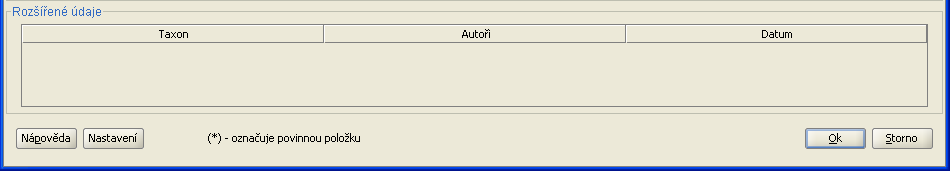

Dialogy pro přidávání a editaci nálezu jsou v zásadě stejné, liší se jen v učelu a detailech chování. Editaci i přidávání je možné vyvolat z panelu nástrojů. Přidávání je možné vyvolat i ze stromu nálezů. Pak se v přidávacím dialogu předvyplní údaje dané lokality.

Dialog se v obou případech skládá ze tří částí: zadávání místa, zadávání nálezu a tabulky seznamu nálezů. Tabulka se seznamem nálezů obsahuje všechny nálezy obsažené v dané lokalitě. Je zobrazena pro snazší orientaci v již zadaných nálezech. Vždy je nutné vyplnit všechny povinné položky (jsou označeny hvězdičkou). Po zadání položek se kliknutím na tlačítko Ok přidá nový nález. Dialog zůstane otevřený i se všemi vyplněnými hodnotami pro snazší zadávání více nálezů na stejném místě (případně stejného nálezu na různých místech). Vymazání vyplněných hodnot je možné tlačítkem Vymaž, které vymaže hodnoty v příslušné sekci.

Při zadávání nového nálezu je nutné vyplnit všechny povinné položky. Jsou označeny hvezdičkou pro snazší orientaci. Pokud byl dialog pro přidávání vyvolán pro určitou lokalitu ze stromu lokalit, pak už je první část dialogu, zadávání místa, předvyplněna.
Místo je možné upřesnit zadáním souřadnic GPS. A to buď prostým vepsáním souřadnic anebo nahráním tabulky GPS souřadnic a zadáním pouze symbolu konkrétní souřadnice. Souřadnice je možné zadat v jednom ze tří souřadných systémů: SJTSK, S42 a WGS84. Plantlore používá jako základní souřadný systém systém WGS84, do kterého se zadané souřadnice vždy převedou. Nahranou tabulku s GPS souřadnicemi je možné zobrazit kliknutím na tlačítko Zobrazit.
Tabulka nálezů v dané lokalitě. Zobrazuje se pouze informace o autorech, taxonu a datu nálezu.
